temporal-difference（TD，时序差分）方法是强化学习中用于价值估计的一类广泛的算法。其与 MC 方法一样，也是 model-free 的方法，但相比 MC 方法的优势是以 **incremental（增量式）**的形式进行。TD 算法的数学本质是 stochastic approximation（随机近似）。
入门：一种估计 state values 的 TD learning 方法
方法内容
在上一节介绍 RM 算法的基础上，考虑使用 RM 算法去估计 state values。
给定一个策略 π，目的是估计所有的 vπ(s)。假设遵循策略 π，采集到的经验样本为 (s0,r1,s1,…,st,rt+1,st+1,…)，其中 t 表示时间步，则下面的 TD 算法可以利用这些样本来估计 state values：
vt+1(st)vt+1(s)=vt(st)−αt(st)[vt(st)−(rt+1+γvt(st+1))],=vt(s),for all s=st
其中 t=0,1,2,…，vt(s) 是状态价值 vπ(s) 在 t 时刻的估计，αt∈(0,1) 是 t 时刻对于状态 st 的学习率。
上面的更新公式实际上是在说，在时刻 t 时，只更新此刻采集到的状态 st 的价值，而其它状态价值全部保持不变。
注意该 TD learning 方法只用于估计给定策略 π 下的 state values，不涉及策略改进（并且也无法用于策略改进，因为 model-free 无法估计出 action values）。
方法推导
上面的 TD 算法是由 RM 算法推导过来的。
给定策略 π，对于任意状态 s，根据状态价值的定义，有
vπ(s)=E[Gt∣St=s]=E[Rt+1+γGt+1∣St=s]=E[Rt+1+γvπ(St+1)∣St=s]
最后一个等式实际上是贝尔曼公式的另一种形式，被称为 Bellman expectation equation（贝尔曼期望公式）。
对于 t 时刻的状态 st，定义关于其状态价值的函数 g：
g(v(st))≐v(st)−E[Rt+1+γvπ(St+1)∣St=st]
因此，要求 vπ(st) 的值，就等价于求解 g(v(st))=0 的根——显然考虑用 RM 算法去求解。由于 t 时刻 episode 的采样是 st，以及 rt+1 和 st+1，因此每个时刻只更新采样到的状态 st 的价值估计，而其它状态的价值估计都保持不变；换句话说，只有当采样到 st 时（st 是 S 中的某个特定状态，例如 s1），才会去更新 st（例如 s1）的价值估计。
对于输入 vt(st)，我们能够得到 g(vt(st)) 的观测值 g~：
g~(vt(st))=vt(st)−(rt+1+γvπ(st+1))=g(vt(st))(vt(st)−E[Rt+1+γvπ(St+1)∣St=st])+η(E[Rt+1+γvπ(St+1)∣St=st]−[rt+1+γvπ(st+1)])
因此根据 RM 算法，t 时刻 st 的更新公式为
vt+1(st)=vt(st)−αt(st)g~(vt(st))=vt(st)−αt(st)[vt(st)−(rt+1+γvπ(st+1))]
其中 αt(s),s∈S 是满足 RM 定理条件的正系数。上一部分（本章开头）提到的估计 state values 的 TD 算法与上述公式与不同之处在于，右边式中 vπ(st+1) 被替换为了 vt(st+1)。这实际上是合理的，因为我们没法获得精准的状态价值 vπ(st+1)（我们的目的就是为了获得 vπ），所以使用 t 时刻状态 st+1 的估计值去替代。并且，这种替代后的算法也是收敛的，这可以由拓展的 Dvoretzky’s 收敛定理证明。
证明（待补充）
性质分析（适用所有 TD 方法）
第一部分的 TD 算法的更新公式可以进一步被描述为
new estimatevt+1(st)=current estimatevt(st)−αt(st)[vt(st)−(TD targetvˉtrt+1+γvt(st+1))TD errorδˉt)]
其中
vˉt≐rt+1+γvt(st+1)
被称作 TD target（时序差分目标）；
δt≐v(st)−vˉt=vt(st)−(rt+1+γvt(st+1))
被称作 TD error（时序差分误差）。
TD target
vˉt 之所以叫 TD target，正是因为它是 vt(st) 朝向的目标：对 vt(st) 的更新公式两边同时减去 vˉt，得到
vt+1(st)−vˉt=[vt(st)−vˉt]−αt(st)[vt(st)−vˉt]=[1−αt(st)][vt(st)−vˉt].
两边取绝对值，得
∣vt+1(st)−vˉt∣=∣1−αt(st)∣∣vt(st)−vˉt∣
由于 αt(st)∈(0,1)，因此 0<1−αt(st)<1，于是
∣vt+1(st)−vˉt∣<∣vt(st)−vˉt∣
这说明状态 st 新的估计值 vt+1(st) 相比旧的估计值 vt(st) 更接近 vˉt。这就是为什么 vˉt 称作 TD target。
TD error
δt 之所以叫 TD error，是因为它衡量了 t 和 t+1 时刻的误差：δt=vt(st)−(rt+1+γvt(st+1))。另一方面，如果 state values 是准确的话（即 vt=vπ），TD error 的期望是 0：
E[δt∣St=st]=E[vπ(St)−(Rt+1+γvπ(St+1))∣St=st]=vπ(st)−E[Rt+1+γvπ(St+1)∣St=st]=0.
与 MC learning 对比
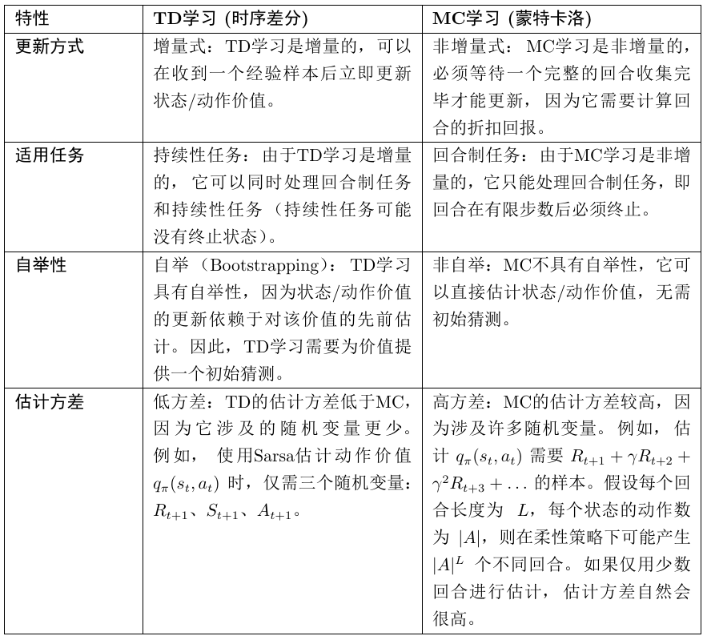
Sarsa：一种估计 action values 的 TD learning 方法
上一部分的 TD 算法只能估计 state values，无法直接用于策略改进（因为 model-free 无法从 state values 推导出 action values）。这一部分介绍的 TD 算法 Sarsa 可以直接估计 action values，并且与策略改进结合可以找到最优策略。
方法内容
给定一个策略 π，目标是估计所有的 qπ(s,a)。假设遵循策略 π，采集到的经验样本为
(s0,a0,r1,s1,a1,…,st,at,rt+1,st+1,at+1,…)
则下面的 Sarsa 算法可以利用这些样本来估计 action values：
qt+1(st,at)qt+1(s,a)=qt(st,at)−αt(st,at)[qt(st,at)−(rt+1+γqt(st+1,at+1))],=qt(s,a),for all (s,a)=(st,at)
其中 qt(st,at) 是 qπ(st,at) 在 t 时刻的估计，αt(st,at)∈(0,1) 是对于 (st,at) 的学习率。
之所以叫"Sarsa"，因为每次迭代需要用到五元组 State、Action、Reward、State、Action，即 (st,at,rt+1,st+1,at+1)。
将上一部分估计 state values 的 TD 算法中的 v 替换为 q，将状态 st 替换为状态-动作对 (st,at)，将 st+1 替换为 (st+1,at+1)，即得到 Sarsa。
方法推导
与 TD 算法类似，Sarsa 可以看作是对 action values 形式的贝尔曼期望方程应用 RM 算法得到的结果。
给定策略 π，动作价值的贝尔曼期望方程为
qπ(s,a)=E[Rt+1+γqπ(St+1,At+1)∣St=s,At=a],∀(s,a)
对于 t 时刻的状态-动作对 (st,at)，定义函数
g(q(st,at))≐q(st,at)−E[Rt+1+γqπ(St+1,At+1)∣St=st,At=at]
要求 qπ(st,at) 的值，等价于求解 g(q(st,at))=0 的根。我们能够获得的噪声观测为
g~(qt(st,at))=qt(st,at)−(rt+1+γqπ(st+1,at+1))
根据 RM 算法，更新公式为
qt+1(st,at)=qt(st,at)−αt(st,at)[qt(st,at)−(rt+1+γqπ(st+1,at+1))]
同样地，由于 qπ(st+1,at+1) 是未知的（我们正是要求它），将其替换为当前的估计值 qt(st+1,at+1)，便得到了最终的 Sarsa 算法。
定理（Sarsa 的收敛性）：给定策略 π，由 Sarsa 算法产生的 qt(s,a) 以概率 1 收敛到 qπ(s,a)，如果对于所有 (s,a) 有
t∑αt(s,a)=∞,t∑αt2(s,a)<∞
其中 ∑tαt(s,a)=∞ 要求每个状态-动作对被访问无限多次，这要求策略具有足够的探索性（如 ε-greedy 策略）。
与 TD 算法类似，Sarsa 的更新公式也可以重新表述为
new estimateqt+1(st,at)=current estimateqt(st,at)−αt(st,at)[TD error δtqt(st,at)−(TD target qˉtrt+1+γqt(st+1,at+1))]
基于 Sarsa 的最优策略学习
Sarsa 本身只做策略评估（policy evaluation）。要找到最优策略，需要将 Sarsa 与 policy improvement 相结合，所得到的迭代算法通常也被称为 Sarsa。
伪代码
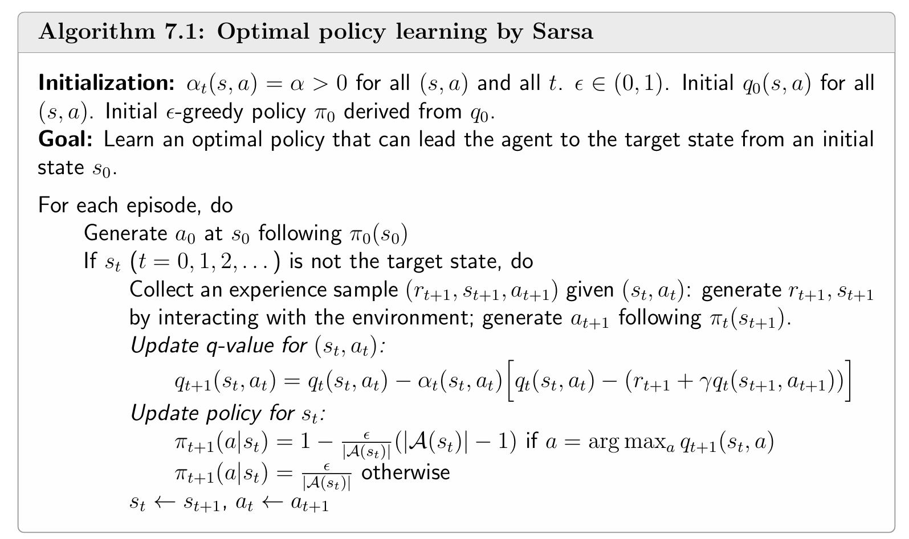
根据上面的伪代码可以发现，采样的过程中策略不断被更新，policy improvement 得到的新的策略会立马用于下一次的采样。
例子
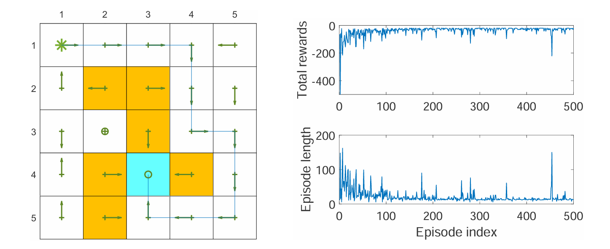
上图是运用 Sarsa 算法的一个例子。与过去寻找最优策略的例子不同的是，该例寻找一个从特定起点到特定终点（左上角到蓝色方格）的最优路径，而不是寻找每个状态的最优策略。
事实上这种情况（起点和终点固定）很常见，并且更加简单，因为不需要探索所有的状态，只需探索离起点到终点沿途中较近的一些状态，但有可能陷入局部最优。
左图展示了最终的最优路径，可以发现部分状态并不是最优的，因为它们离起点到终点的路径比较远，没有被充分的探索。右图展示了每次采样的 episode 的回报（非折扣）与长度的变化。
注意 episode 长度偶尔会出现突变（如第 460 个 episode），这是因为 ε-greedy 策略有概率选择非最优动作，导致轨迹变长。实践中可以使用衰减的 ε 来缓解这一问题——随着学习进行，ε 逐渐减小到 0，使策略最终趋于确定性最优策略。
n-step Sarsa
n-step Sarsa 是 Sarsa 的推广。事实上，Sarsa 和 MC learning 是 n-step Sarsa 的两个极端情况。
回顾动作价值的定义：
qπ(s,a)=E[Gt∣St=s,At=a]
其中 Gt 是折扣回报：
Gt=Rt+1+γRt+2+γ2Rt+3+⋯
Gt 可以被分解为不同的形式：

注意：对于任意 n（包括 ∞），都有 Gt=Gt(1)=Gt(2)=⋯=Gt(n)=Gt(∞)，这些上标仅表示 Gt 的不同分解结构。
将 Gt(n) 代入 qπ(s,a)=E[Gt∣s,a]，并用 RM 算法求解，得到 n-step Sarsa 的更新公式：
qt+n(st,at)=qt+n−1(st,at)−αt+n−1(st,at)[qt+n−1(st,at)−(rt+1+γrt+2+⋯+γnqt+n−1(st+n,at+n))]
由于 t 时刻还没有采集到 (rt+n,st+n,at+n)，需要等到 t+n 时刻才能更新 (st,at) 的 q 值。这意味着 n-step Sarsa 不是每一步都立即更新，而是有 n 步的延迟。
这里对 n 的选取涉及偏差-方差的权衡：
- n 较小（如 Sarsa）：TD target 中大量使用了估计值 qt，因此偏差较大但方差较低（因为涉及的随机变量少）
- n 较大（接近 MC）：TD target 中更多地使用实际的奖励样本，因此偏差较小但方差较高（因为涉及的随机变量多）
这是强化学习中经典的 bias-variance trade-off。在实践中，n 的最优值取决于具体问题，通常需要通过实验来调节。
Q-learning：一种直接估计最优策略的 TD learning 方法
前文介绍的 TD 算法（包括 Sarsa 和 n-step Sarsa）都只能估计给定策略的价值，必须与 policy improvement 结合才能找到最优策略。而 Q-learning 可以直接估计最优动作价值，从而直接得到最优策略，这使其成为强化学习中最经典、最重要的算法之一。
方法内容
Q-learning 的更新公式为：
qt+1(st,at)qt+1(s,a)=qt(st,at)−αt(st,at)[qt(st,at)−(rt+1+γa∈A(st+1)maxqt(st+1,a))],=qt(s,a),for all (s,a)=(st,at)
其中 qt(st,at) 是 (st,at) 的最优动作价值的估计，αt(st,at) 是学习率。
Q-learning 与 Sarsa 的关键区别是，TD target 从 rt+1+γqt(st+1,at+1) 变成了 rt+1+γmaxaqt(st+1,a)，从而 Q-learning 不再需要 at+1——给定 (st,at)，Q-learning 只需要 (rt+1,st+1)，而 Sarsa 需要 (rt+1,st+1,at+1)。
方法推导
Q-learning 是用于求解**贝尔曼最优方程（Bellman Optimality Equation, BOE）**的随机近似算法。
贝尔曼最优方程（动作价值形式）为：
q(s,a)=E[Rt+1+γa′maxq(St+1,a′)∣St=s,At=a],∀(s,a)
对于 (st,at)，定义
g(q(st,at))≐q(st,at)−E[Rt+1+γa′maxq(St+1,a′)∣St=st,At=at]
要求 q∗(st,at)（最优动作价值）等价于求解 g(q(st,at))=0。我们能够获得的噪声观测为
g~(qt(st,at))=qt(st,at)−(rt+1+γa′maxqt(st+1,a′))
根据 RM 算法即得到 Q-learning 的更新公式。
证明动作价值形式的 BOE：
根据期望的定义，上述公式可写为
q(s,a)=r∑p(r∣s,a)r+γs′∑p(s′∣s,a)a∈A(s′)maxq(s′,a).
等式两边取最大值，得到
a∈A(s)maxq(s,a)=a∈A(s)max[r∑p(r∣s,a)r+γs′∑p(s′∣s,a)a∈A(s′)maxq(s′,a)].
令 v(s)≐maxa∈A(s)q(s,a)，得到
v(s)=a∈A(s)max[r∑p(r∣s,a)r+γs′∑p(s′∣s,a)v(s′)]=πmaxa∈A(s)∑π(a∣s)[r∑p(r∣s,a)r+γs′∑p(s′∣s,a)v(s′)]
上面公式即为 state values 形式的 BOE，证毕。
On-policy 和 Off-policy
理解 Q-learning 之前，首先需要理清两个重要概念：行为策略（Behavior Policy）和目标策略（Target Policy）。
- behavior policy：用于生成经验样本的策略。
- target policy：不断更新、最终收敛到最优策略的策略。
当 behavior policy 和 target policy 一样时，这样的学习过程称为 on-policy；反之若不同，则称为 off-policy。
| 学习方式 |
定义 |
特点 |
| On-policy |
行为策略 = 目标策略 |
用正在学习的策略生成样本，必须平衡探索与利用 |
| Off-policy |
行为策略 ≠ 目标策略 |
可以用其他策略（如人类专家、随机策略）生成的样本来学习 |
Sarsa 是 On-policy 算法
Sarsa 每一步需要 (st,at,rt+1,st+1,at+1)：
stπbatenvironmentrt+1,st+1πbat+1
其中 πb 既是生成样本的 behavior policy，也是 Sarsa 正在评估和改进的 target policy。两者相同，因此 Sarsa 是 on-policy。
Sarsa 使用 ε-greedy 策略而非纯贪心策略，正是因为该策略需同时承担行为策略的角色，必须具有探索性。
Q-learning 是 Off-policy 算法
Q-learning 每一步只需要 (st,at,rt+1,st+1)：
stπbatenvironmentrt+1,st+1
关键在于behavior policy πb 负责生成 at，可以是任意探索性策略；而 target policy πT 是 argmaxaq(s,a)（纯贪心）。生成 (rt+1,st+1) 的过程由环境决定，不涉及行为策略。因此，Q-learning 的目标策略与行为策略可以不同（也可以相同），是 off-policy。
Off-policy 的优势：
- 可以利用其他策略（如人类专家策略、随机探索策略）生成的经验数据进行学习
- 行为策略可以选择具有强探索能力的策略（如均匀分布），从而更充分地探索所有状态-动作对
- 目标策略可以是纯贪心的，不需要为了探索而牺牲最优性
注意 Off-policy 和 **Off-line（离线学习）**是两个概念，后者是指使用预先采集的数据进行学习，而不与环境交互。Off-policy 算法可以以 online 或 offline 方式实现。
实现
Q-learning 有两种实现方式：on-policy 版本和 off-policy 版本。
On-policy 版本
此版本中，行为策略与目标策略相同，均为 ε-greedy 策略。
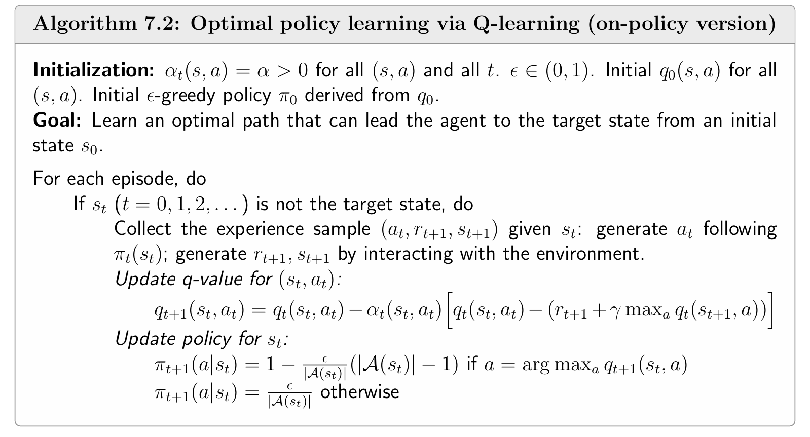
Off-policy 版本
此版本中，行为策略 πb 与目标策略 πT 完全分离。
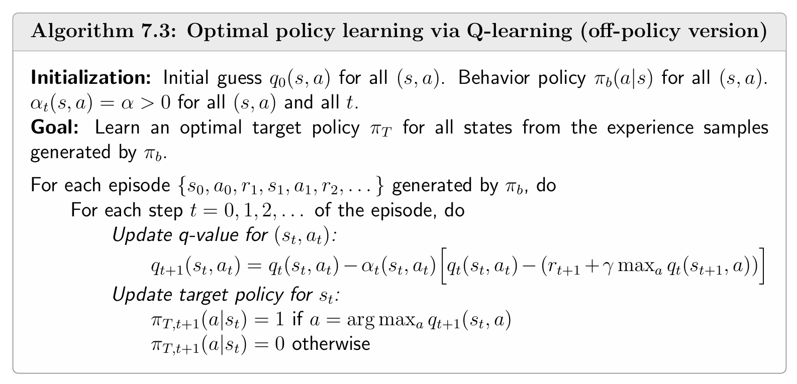
目标策略是纯贪心策略而非 ε-greedy：因为目标策略不需要用于生成样本，不需要探索性。这是 off-policy 的核心优势之一。
例子
例1：on-policy 的 Q-learning
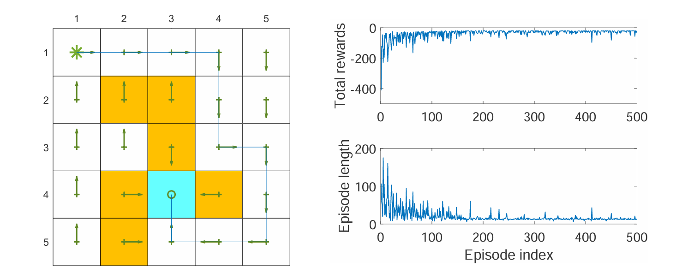
上图展示了使用 on-policy 的 Q-learning 的结果。这里也是寻找从特定起点到特定终点（左上到蓝色方格）的最优路径。左图为最终找到的最优路径，右图为每次采样到的 episode 的回报（非折扣）和长度的变化。
例2：off-policy 的 Q-learning
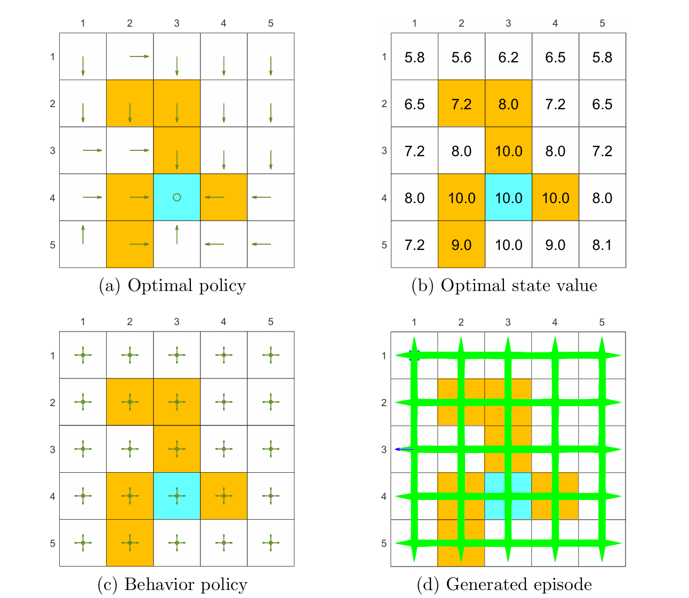
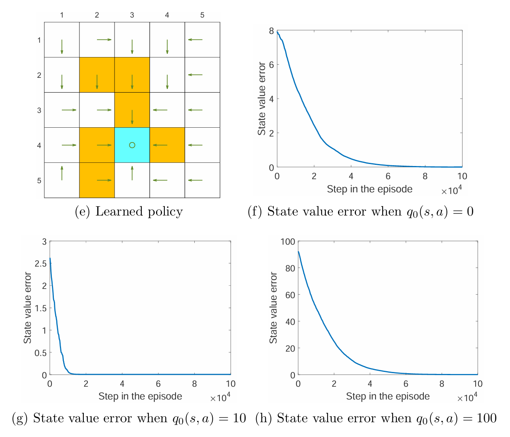
上图展示了使用 off-policy 的 Q-learning 的结果，任务是找到所有状态的最优策略。可以看到在探索性充分的情况下，每一个状态-动作对都被充分访问很多次。由图可以发现初始的 action values q0(s,a) 会影响收敛的效果，但即使初始值偏差很大，使用 Q-learning 也能够很快地收敛。
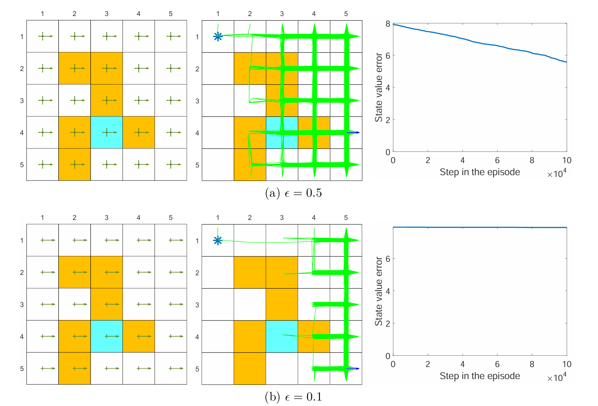
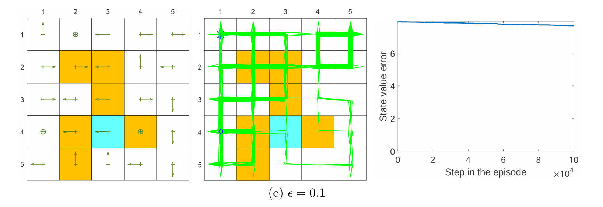
上图展示了对 behavior policy 的 ϵ 采用不同值的结果。当 behavior policy 探索性很弱时，学习的效果会很差，收敛速度下降很快。 这说明了 off-policy 中行为策略选择的重要性——探索性越强的行为策略，越能生成丰富多样的经验样本，从而加速学习。
统一视角：所有 TD 算法的共同框架
本节将所有 TD 算法（包括 MC）纳入一个统一的表达框架。
统一表达式
事实上，所有 TD 算法（用于动作价值估计）都可以表示为：
qt+1(st,at)=qt(st,at)−αt(st,at)[qt(st,at)−qˉt]
其中 qˉt 是 TD target。不同算法的区别仅在于 qˉt 的定义不同：
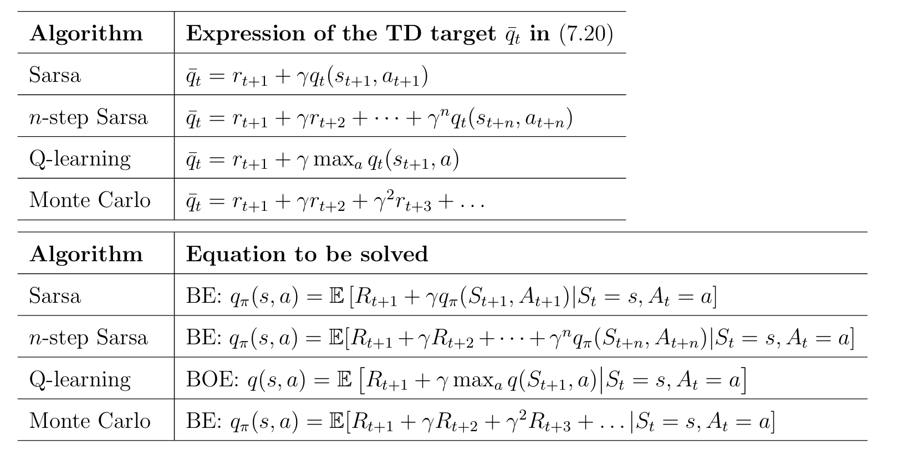
MC 可以视为统一表达式的一个特例：取 αt(st,at)=1，则 qt+1(st,at)=qˉt（即直接用样本回报更新）。
这些算法的根本区别在于它们求解的数学问题不同：
- Sarsa、n-step Sarsa、MC：求解给定策略 π 的贝尔曼期望方程，用于策略评估
- Q-learning：直接求解贝尔曼最优方程，直接得到最优价值
因此：
- Sarsa 类算法是 on-policy 的（评估的是生成样本的策略）
- Q-learning 是 off-policy 的（求解 BOE 不依赖于特定的行为策略）
算法对比总结
| 特性 |
TD (state) |
Sarsa |
n-step Sarsa |
Q-learning |
| 估计对象 |
State values vπ |
Action values qπ |
Action values qπ |
Optimal action values q∗ |
| TD target |
rt+1+γvt(st+1) |
rt+1+γqt(st+1,at+1) |
rt+1+⋯+γnqt(st+n,at+n) |
rt+1+γmaxaqt(st+1,a) |
| 求解方程 |
Bellman 方程（状态） |
Bellman 方程（动作） |
Bellman 方程（动作） |
Bellman 最优方程 |
| On/Off-policy |
— |
On-policy |
On-policy |
Off-policy |
| 是否可策略改进 |
❌ |
✅ |
✅ |
✅（直接得到最优） |
| 所需样本 |
(st,rt+1,st+1) |
(st,at,rt+1,st+1,at+1) |
多步样本 |
(st,at,rt+1,st+1) |